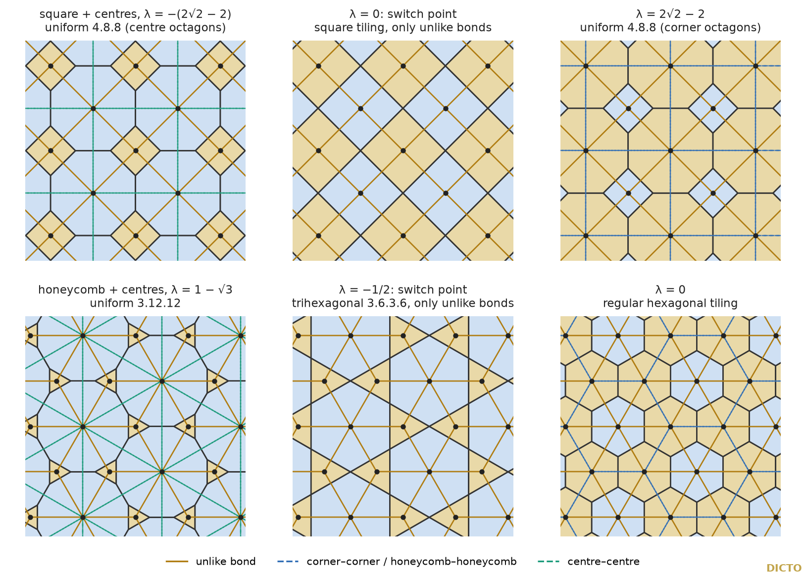
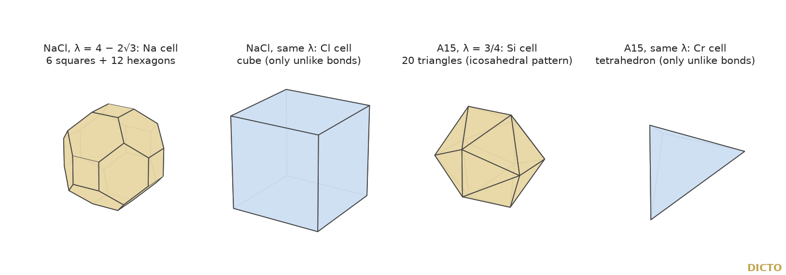

Theorem: for ten classical two-kind crystal site sets, and one three-kind set, the weighted Voronoi (power) diagram is computed exactly along the whole weight line on which both kinds have cells: every flip, the bonds on every interval, and every point where only unlike bonds exist. The two hand-overs of the DICTONIC loops, gradual and with a single switch, both recur.
Version 2 adds Section 6: the flip formula (Theorem A: every flip is the one root λ* = S₀/SA of an affine lifted determinant, with an empty power sphere), the switch theorem (Theorem B: at a switch point every dual cell trades the edges of the hull of one kind for those of the other, so a switch is always single), the ends of the range by a small linear programme (Theorem C, proving Observation 4), zinc blende's unlike face as CsCl's scaled by −2 (Theorem E and Corollary F, proving Observation 2 exactly) and a finite criterion for the type of hand-over (Proposition D, for Observation 3); Observation 1 is proved for the four switch points, and its quadrilateral open problem is answered no by the h-BN honeycomb and the Si/Al sodalite network.
Two loops of DICTO's showed two ways in which bonds can hand over. DICTO proposed that the same branches appear in other networks. We walked the weight through ten networks to find out.
Paper #48 [1] found the golden pair (the Icosaxes and the Unborn Axes) in a one-parameter family of space-filling truncated octahedra; paper #51 [2] found the Delian bond (Samson and Delilah) in a one-parameter family between Kepler's rhombic dodecahedron and the cube. DICTO calls the solids the DICTONIC SOLIDS and the pairs the DICTONIC BONDS. Paper #52 [3] proved that both loops are power diagrams of fixed sites of two kinds, the caesium chloride sites and the fluorite sites, with one weight slid between the kinds, and that the bonds in the golden loop hand over gradually while those in the Delian loop hand over at the octet. On 25 October 2026 DICTO proposed that these branches could show up elsewhere in geometric networks in slightly different guises. This paper reports the exact study that tests that proposal [S].
Fix the points; give each kind a weight; let the difference of the weights run. Each piece is the region nearer, in the weighted sense, to its own point than to any other.
Power diagram. Given sites ci with weights wi, the power cell of ci is the set of points p with |p − ci|² − wi ≤ |p − cj|² − wj for all j [6, 7]. The cells are convex and fill space; two of them meet, if at all, in the power bisector of their sites. Two sites are bonded when their cells share a face of full dimension (an edge in the plane, a polygon in space); the bonds are the edges of the dual weighted-Delaunay (regular) subdivision [6]. A bond is unlike when it joins sites of different kinds and like otherwise.
The networks. Each network is a periodic set of sites of two kinds A and B, with wA = λ and wB = 0, so λ = wA − wB (Table 1). The coexistence range is the set of λ at which both kinds have cells of positive volume. A flip is an interior value of λ at which the face lattice of the diagram changes. Following #52, the two like bonds hand over gradually when both are alive on a common open interval, and with a single switch when one dies exactly where the other is born. A switch point is a value of λ at which both kinds have cells and every bond is unlike: the octet is the switch point of the Delian loop.
| Network | Kinds A, B | Sites and units |
|---|---|---|
| CsCl (golden-loop sites) | big, small | big 2ℤ³, small 2ℤ³ + (1, 1, 1): half cube edge 1. The golden loop's x ∈ [0, ∞] is λ = (x − 1)/(x + 1) |
| fluorite (Delian-loop sites) | tet, oct | fcc ("oct") and all its tetrahedral holes ("tet"); octet edge 1, the app's units. λ = (3/8)(2t − 1) |
| square + centres | corner, centre | corners 2ℤ², centres 2ℤ² + (1, 1): square edge 2 |
| honeycomb + centres | honeycomb, centre | the triangular lattice of edge 1, split 2 : 1 into the honeycomb points and the hexagon centres |
| kagome + centres | kagome, centre | the triangular lattice of edge 1, split 3 : 1 into the kagome points and the hexagon centres |
| rock salt NaCl | Na, Cl | two face-centred cubic lattices; Na–Cl distance 1 |
| zinc blende ZnS | Zn, S | fcc (Zn) and one set of its tetrahedral holes (S); cubic cell edge 4, Zn–S distance √3, Zn–Zn distance 2√2 |
| hcp holes | tet, oct | the octahedral and tetrahedral holes of ideal hexagonal close packing, the cell centres of the gyrated tetrahedral–octahedral honeycomb (used in DICTO's papers #37a and #40 [4, 5]); hcp edge 1 |
| A15 Cr₃Si | Si, Cr | the A15 (β-tungsten) sites; cubic cell edge 2 |
| C15 Laves MgCu₂ | Mg, Cu | the C15 sites; cubic cell edge 8 |
| perovskite ABX₃ (three kinds) | A, B, X | A cube corners, B body centre, X face centres; cubic cell edge 2 (A–X distance √2, B–X distance 1); λ = wA − wX, μ = wB − wX |
Table 1. The networks and their units [S, README "Units"]. Hexagonal sites are handled exactly in a 60° basis with a rational metric; a power diagram in such a metric is an affine image of the Euclidean one, with the same combinatorics and the same weights.
For every network the whole walk is known exactly: where both kinds live, where the pattern flips, which bonds exist in between, and where only unlike bonds are left.
| Network | Range | Flips | A–A present | B–B present | Hand-over | Switch point |
|---|---|---|---|---|---|---|
| CsCl | (−3, 3) | −1, 1 | big–big (−1, 3] | small–small [−3, 1) | gradual, both on (−1, 1) | none |
| fluorite | (−3/8, 3/8) | −1/8 | tet–tet (−1/8, 3/8] | oct–oct [−3/8, −1/8) | single switch | −1/8 (octet) |
| square + centres | (−2, 2) | 0 | corner–corner (0, 2] | centre–centre [−2, 0) | single switch | 0 (square tiling) |
| honeycomb + centres | (−1, 1) | −1/2 | honeycomb–honeycomb (−1/2, 1] | centre–centre [−1, −1/2) | single switch | −1/2 (trihexagonal) |
| kagome + centres | (−1, 1) | none | kagome–kagome (−1, 1] | centre–centre only at −1 | none: one like bond | none |
| rock salt | (−1, 1) | 0 | Na–Na (0, 1] | Cl–Cl [−1, 0) | single switch | 0 (cubes) |
| zinc blende | (−3, 3) | −1, 1 | Zn–Zn (−1, 3] | S–S [−3, 1) | gradual, both on (−1, 1) | none |
| hcp holes | (−11/24, 3/8) | −1/8, 5/24 | tet–tet (−11/24, 3/8] | oct–oct [−11/24, 5/24) | gradual, both on (−11/24, 5/24) | none |
| A15 | (−5/4, 5/4) | 1/4, 3/4 | Si–Si (1/4, 5/4] | Cr–Cr [−5/4, 3/4) | gradual, both on (1/4, 3/4) | none |
| C15 | (−11, 11) | −5, 7, 9 | Mg–Mg (−5, 11] | Cu–Cu [−11, 9) | gradual, both on (−5, 9) | none |
Table 2. The ten walks [S, README "Summary table" and "Lives of the bonds"; relay-summary.json]. λ in the units of Table 1. The unlike bond is present exactly on the open range in every row. The ends of the like-bond lives are closed where the other kind's cells have shrunk to points but the like faces survive.
Why: along the weight line every corner of every cell moves on a straight line, so each corner stays a corner until one exact rational value; walking from one such value to the next covers the whole line.
Proof (computer-assisted, exact). Each site set has rational coordinates in a rational metric G. The power inequality between sites i and j is nij·p ≤ bij(λ) with nij rational and bij affine in λ with rational coefficients. A corner is the solution of d such equalities, so it is p(λ) = A⁻¹b(λ), affine in λ with rational coefficients, and the slack of every other inequality at that corner is affine in λ. Hence, at a rational sample λ₀, the face lattice is constant on the open interval on which no slack that is positive at λ₀ reaches 0; its ends are rational [S, scripts/engine.py]. Floats only choose candidate corners; every corner is then solved and tested in exact fractions. The walk starts at λ = 0, finds the interval, analyses its end (the stop), steps just past the stop and repeats, checking that each new interval begins exactly at the previous stop [S, scripts/census.py]. On every interval: the cell volumes, as polynomials in λ, add up to the volume of the lattice cell identically (so no corner and no cell is missing); every face is found in both of its cells with the same measure; Euler's formula holds for every three-dimensional cell; and a distance bound shows that the finite list of sites cannot be cut by a farther site anywhere on the closed interval. At every stop the limit of the interval's corners equals the power cell computed from scratch at that exact λ. (i) Increasing λ only relaxes the inequalities of A cells against B sites, so every A cell grows and every B cell shrinks with λ; each kind therefore has cells on an interval, and the walk ends where a cell volume polynomial vanishes and the cell is checked to be a point. (ii) The interval ends are the flips; that the face lattice differs on the two sides of each flip is read off the interval records. (iii) The life of each bond type is read off the records of all intervals and stops, with a check that it is present on every record between its ends [S, scripts/relay.py]. (iv) All records are searched for parameters with both kinds alive and only unlike bonds; the dual cells and bond counts are read off the corner incidences. (v) For the perovskite, every slack is affine in (λ, μ); exact chambers are found and the plane is explored by stepping across every wall, and every interior wall segment is checked to be covered by chambers on its other side [S, scripts/perovskite.py]; on each of the five open interior wall segments no other wall crosses, so the face lattice is constant along it, and one exact point (its midpoint) shows a like bond there [S, scripts/walls.py]. An independent float computation at three random parameters inside every interval gives the same bond counts [S, scripts/crosscheck.py]. Both DICTONIC loops of #52 are reproduced exactly, including the Delian flip at t = 1/3 and its two equal-edged stops. In all: 543 checks on the walks, 41 on the bond lives (including 9 regressions against #52's study), 47 on the perovskite, 12 float and dual-cell cross-checks, 5 on the perovskite walls; 648 PASS, 0 FAIL (Appendix B). ∎
The theorem places DICTO's two loops inside larger families, shows that every switch point is a meeting of two ways to cut the same dual cell, and finds classical tilings at the named stops.
Corollary 1 (the DICTONIC loops inside the census). In half-cube-edge units the golden loop of #48 is λ = (x − 1)/(x + 1), so x ∈ [0, ∞] covers exactly [−1, 1]: the gradual-hand-over interval of CsCl, from flip to flip. Its ends x = 0 and x = ∞ are those flips, where the cells are octahedra and cuboctahedra; beyond them, on (−3, −1) and (1, 3), the CsCl family continues with truncated cubes and octahedra, ending in cubes at ±3 [S, README]. The Delian loop of #51, λ = (3/8)(2t − 1), covers the whole fluorite range, and its switch is the octet.
Corollary 2 (switch points are walls). In any two-kind network, every switch point is a wall: there every bond is unlike, so the edges of every dual cell join sites of different kinds, while a simplex with three or more corners of two kinds always has an edge joining two of the same kind; hence no dual cell is a simplex. At each of the four switch points the dual cells are not simplices (Main theorem (iv)), and on the two sides they are cut in the two possible ways: the dual squares and rhombi into two triangles across one diagonal or the other (2 centre + 1 corner or 1 centre + 2 corner sites; the same for the honeycomb); the dual cubes of rock salt into four corner tetrahedra and one central tetrahedron (3 Cl + 1 Na and 4 Cl below 0, 1 Cl + 3 Na and 4 Na above); the rhombic dodecahedra of fluorite into an octahedron and 8 tetrahedra below −1/8 and a cube and 6 square pyramids above, as in #52 [S, data/raw/*.json "dual"; S2]. In the language of regular subdivisions [8, 9] each switch point is a wall where two regular subdivisions of the same non-simplicial cell meet, and the switch is a flip in that sense; in the plane and in rock salt both sides are triangulations, but in fluorite neither is, so there the switch is a wall of the secondary fan and not a single bistellar flip (Theorem B, Section 6). For square + centres and rock salt the wall is forced at λ = 0: with equal weights the sites form a lattice (a square lattice, the simple cubic lattice) whose Delaunay cells are squares and cubes; Voronoi's theory of lattice Delaunay subdivisions covers this case [10, 11]. The swap of the two diagonals in a quadrilateral is the elementary two-dimensional flip; the two cuts of the cube used here are its two "corner-cut" triangulations into five tetrahedra [9].
Why: the A cells and the B cells together fill space, so somewhere an A region must border a B region along a flat piece of wall.
Proof. Let UA be the union of the A cells; it is closed, as a locally finite union of closed sets. It has nonempty interior, and an interior point of a B cell lies in no A cell (cells have disjoint interiors), so UA is a proper subset of space. Hence its boundary ∂UA is nonempty, and space minus ∂UA is the disjoint union of the interiors of UA and of UB, both nonempty, so it is disconnected. ∂UA is a union of pieces of facets of A cells; if every piece had dimension at most d − 2 it could not disconnect space, so ∂UA contains a relatively open piece of positive (d − 1)-measure of a facet of some A cell. The points just across that piece lie in B cells, finitely many near it, so one B cell meets that facet in a set of positive (d − 1)-measure; since the tiling is face-to-face, that set is a common facet, an A–B bond. With more kinds, apply the argument to one kind against the union of all others. ∎ This explains the perovskite: A–B dies on λ + 2μ = 0, but A and B each keep their bonds with X. We found no statement of this elementary fact in the sources searched.

Proposition 2 (classical: the circumsphere rule). If every tile of a face-to-face convex tiling has a circumscribed circle or sphere, then two tiles that share a facet have their facet in the radical line or plane of their two circles or spheres (its corners have power 0 with respect to both), and the tiling is the power diagram of the tiles' circumcentres with weights equal to the squared circumradii [6, 12, 13, 14]. Every uniform tiling and honeycomb has such tiles.
Corollary 3 (named tilings at the stops). Where a uniform tiling is a stop or a special point of a walk, its λ is the difference of the squared circumradii of the A tile and the B tile, and the census finds exactly that value [S, prior-art.md, find 2]: the uniform truncated square tiling 4.8.8 at λ = ±(2√2 − 2) in square + centres (all edges equal; the octagons are the centre cells for λ < 0 and the corner cells for λ > 0); the uniform truncated hexagonal tiling 3.12.12 at λ = 1 − √3 and the trihexagonal tiling 3.6.3.6 at the switch point λ = −1/2 (one edge length, edge² = 3/4) in honeycomb + centres; the uniform truncated cubic honeycomb (truncated cubes and octahedra) at λ = ±(2√2 − 1) in CsCl; the octet at λ = −1/8 in fluorite and the gyrated tetrahedral–octahedral honeycomb at λ = −1/8 in the hcp holes. These are instances of Proposition 2, not new tilings. Away from uniform tilings the census also finds exact stops the rule does not cover: in rock salt every edge of the tiling has one length at λ = ±(4 − 2√3), where the larger cell has 6 squares and 12 hexagons (the face vector of the chamfered cube) and the smaller is a cube (Figure 3).
Corollary 4 (the octet in hexagonal stacking). In the hcp holes, whose diagram at λ = −1/8 is the gyrated tetrahedral–octahedral honeycomb (regular octahedra and tetrahedra; the gyrated octet of DICTO's #37a and one of the stackings of #40 [4, 5]), the octet's flip stays at λ = −1/8: there oct–oct bonds at squared distance 1 die and tet–tet bonds are born (at squared distance 1/2, as in fluorite, and also at 1). But −1/8 is not a switch point: across the gyrated layers each oct piece keeps 2 oct–oct bonds and each tet piece 1 tet–tet bond. Of these cross-layer bonds, tet–tet at squared distance 1/6 lives on the whole range (−11/24, 3/8] and oct–oct at squared distance 2/3 dies only at a second flip, λ = 5/24 (Table 3). The dual cell at an atom at λ = −1/8 is the trapezo-rhombic dodecahedron (6 rhombi and 6 trapezoids), where fluorite has the rhombic dodecahedron (12 rhombi) [S, crosscheck-checks.txt].
| Network | Bond family (type @ squared site distance) | Present |
|---|---|---|
| hcp holes | oct–tet @ 3/8 | (−11/24, 3/8) |
| oct–oct @ 1 (in-layer) | [−11/24, −1/8) | |
| tet–tet @ 1/2 and @ 1 (in-layer) | (−1/8, 3/8] | |
| oct–oct @ 2/3 (cross-layer) | [−11/24, 5/24) | |
| tet–tet @ 1/6 (cross-layer) | (−11/24, 3/8] | |
| A15 | Cr–Si @ 5/4 | (−5/4, 5/4) |
| Cr–Cr @ 1 and @ 3/2 | [−5/4, 3/4) | |
| Si–Si @ 3 | (1/4, 5/4] | |
| Si–Si @ 4 | (3/4, 5/4] | |
| C15 | Mg–Cu @ 11 | (−11, 11) |
| Cu–Cu @ 8 | [−11, 9) | |
| Mg–Mg @ 12 | (−5, 11] | |
| Mg–Mg @ 32 | (7, 11] |
Table 3. Bond families where a bond type splits by distance [S, README "Lives of the bonds"; relay-summary.json "orbits"]. In the other networks each bond type is a single family.
Corollary 5 (A15 beyond Weaire and Phelan). Weaire and Phelan already used this family: as reported by Sloane and Vaishampayan [15], their weighted Voronoi partition of A15 puts the walls between unlike sites on the plane (X − E)·(D − E) = μ|D − E|² and has the 12-faced and 14-faced cells for 0 < μ < 3/5 [16]; Kashyap and Neuhoff [17] gave its cell volumes. That plane is a power bisector, and in our units λ = (5/4)(2μ − 1), so μ = 0, 1/2, 3/5 are λ = −5/4 (the lower end), 0 (the polyhedral Weaire–Phelan cells, before Weaire and Phelan relaxed them into a curved foam) and 1/4 (the first flip); rescaled, Kashyap and Neuhoff's volume is the Si cell volume (4λ + 5)³/128 on (−5/4, 1/4) [S, prior-art.md, find 1]. What the census adds is the rest of the walk: on (1/4, 3/4) Si–Si bonds exist alongside Cr–Cr; at λ = 3/4 the Cr–Cr bonds (both families) die exactly where a second Si–Si family is born, the Cr cells are tetrahedra with only unlike bonds and the Si cells have 20 triangles, with 12 corners of degree 5 (the face pattern of the icosahedron); at 5/4 the Si cells are truncated octahedra, the Voronoi cells of the body-centred cubic Si sites. Because the first Si–Si family has been alive since 1/4, λ = 3/4 is not a switch point.

Corollary 6 (perovskite). In the three-kind perovskite the two like bonds A–A and X–X are both present exactly on 0 < λ < 1 − μ, and their two lines meet only at the corner (0, 1) of the region, where the X cells vanish (Figure 4). So the hand-over is gradual throughout, and would only become a single switch at the edge of the region. At (0, −1) the B cells are points and the A and X cells are rhombic dodecahedra, the Voronoi cells of the face-centred cubic A + X sites.

Some patterns hold in every network we computed. We first stated them as observations; Section 6 proves Observations 2 and 4, proves Observation 1 for the four switch points and answers its open problem, and gives a criterion for Observation 3.
Each flip happens where a few sites come to lie on one weighted sphere, at a value read off a single sum. At a switch point every dual cell is cut in the two ways its two kinds allow, so one like bond is born exactly where the other dies. And the CsCl–zinc blende coincidence is one cube sliced by one plane at two scales.
Throughout, the sites pi lie in n-space (n = 2 or 3), with wA = λ and wB = 0 as in Section 2. The dual subdivision S(λ) is the lower hull of the lifted points (pi, |pi|² − wi) [6]; its edges are the bonds. S(λ) is in general not a triangulation: non-simplicial cells, such as the octahedra and cubes of fluorite, persist on whole intervals. So the setting is regular subdivisions and the walls of the secondary fan [8, 9], not the regular triangulations in general position of Edelsbrunner and Shah [28]. Besides the ten networks of Table 1 we use two controls [S2]: h-BN, the honeycomb with its two sublattices as the two kinds (edge 1, range (−1, 1)), and sodalite, the vertices of the bitruncated cubic honeycomb with the Si/Al order that obeys Loewenstein's rule (range (−2, 2)).
Proof. Expand the determinant along the lift column. The cofactors are ±(n + 1)-point determinants, proportional to the αi (Cramer's rule); since wi = λ·[pi ∈ A], the result is affine in λ. This is the lifted test of Edelsbrunner and Shah [28]; that flip times are linear when the weights change linearly is also used by Miller and Sheehy [29]. (⇒) At a flip λ* some cell C of S(λ*) does not survive to nearby λ. If the lifted heights of C's sites stayed affine for all λ, C would stay a lower face until another site reached its sphere, and a site that reaches the sphere at λ* is already in C. So the heights are affine at λ* only, and some n + 1 independent sites of C with one further site of C form a Z whose determinant is not identically zero but vanishes at λ*; its sphere at λ* is C's sphere, which is empty. (⇐) If such a Z exists, conv Z lies in a cell of S(λ*); for λ ≠ λ* nearby the points of Z are not on one power sphere, so that cell is split. Both sides refine S(λ*), by opposite height functions (Theorem B(1)), and a nontrivial subdivision differs from its opposite (if ψ and −ψ were both convex, ψ would be affine), so the two sides differ. ∎
How it was checked. Brute force over all sets of n + 2 sites with pairwise squared distance at most (2ρ)², with ρ the largest corner-to-site distance of the walks (every dual cell lies inside this bound): the exact roots S₀/SA in the open range with an exact empty-sphere test equal the flip list of the exact walk in all twelve networks, nothing missed and nothing extra (12/12 PASS) [S2, scripts/circuits.py]. Known case: for the fluorite octet, the oct site (1, 0, 0), the tet sites (3/2, −3/2, −1/2), (3/2, −1/2, −1/2), (3/2, −3/2, 1/2) and the oct site (2, −1, 0), in the metric G = I/2, have α = (−1/2, −1/2, 1, 1/2, −1/2), S₀ = −1/8 and SA = 1, so λ* = −1/8, and its empty power sphere carries the 14 sites of the rhombic dodecahedron. Every flip of Table 2 is such a ratio: 0/−4 (square + centres), −1/2 (honeycomb + centres), −8/8 and −8/−8 (CsCl), −1/8 (fluorite), 0/−2 (rock salt), −16/16 and 16/16 (zinc blende), (1/16)/(−1/2) = −1/8 and (−5/48)/(−1/2) = 5/24 (hcp holes), (9/16)/(9/4) = 1/4 and (3/2)/2 = 3/4 (A15), 240/−48 = −5, 224/32 = 7 and 288/32 = 9 (C15); kagome + centres has none [S2, data/circuits-stdout.txt].
Proof. (1) On C the lift |p|² − w(λ*) is affine. For λ = λ* + ε the lift changes by −ε·χA = ε·χB − ε, which up to an affine function is ε·χB. For ε below the smallest positive gap among the finitely many cell configurations up to translation, S(λ* + ε) refines S(λ*) by these heights, cell by cell: the refinement lemma for regular subdivisions [9, §2.3; 8, ch. 7]. (2) Let Q be a cell above λ* with affine lower function ℓ (ℓ ≤ h on all sites, with equality on the sites of Q). Let b ∈ BC be a site of Q and y another site of Q adjacent to b in Q. As y ∈ C and the cone of C at b is spanned by C's edges at b, which all end at sites a ∈ AC, y = b + Σ μa(a − b) with μ ≥ 0, and ℓ(y) = 1 + Σ μa(ℓ(a) − 1) ≤ 1 − Σ μa, since ℓ(a) ≤ h(a) = 0. If y ∈ B, then h(y) = 1 forces Σ μ = 0, so y = b, a contradiction: no cell holds two B sites. If y ∈ A, then ℓ(y) = 0 forces Σ μ ≤ 1, so y is a convex combination of b and vertices of C; being itself a vertex of C, Σ μ = 1 and y is one of the a, so [b, y] is an edge of C. Every lifted A site has height 0, so conv(AC) is a lower face; every other cell has exactly one B site b, and its A sites lie on {ℓ = 0}, a facet F of conv(AC), so the cell is conv(b ∪ F). Below λ* the same holds with A and B swapped. (3) At a switch point every edge is unlike; a simplex with three or more corners of two kinds always has a like edge, so no cell is a simplex; apply (2) to every cell. If a like-bond life ended at λ* and the other began there, with neither alive at λ*, then λ* is a switch point by definition. ∎ The structure in (2) is the classical pushing of vertices [9, §4.3; 30]: pushing a vertex b replaces C by conv(C ∖ b) and the cones from b over the faces it sees, and since BC is an independent set in the graph of C, pushing all of BC at once gives conv(AC) and the pyramids.
What it says about Observation 1. At the four switch points of the census the dual cells are squares, rhombi, cubes and rhombic dodecahedra, and every edge of a conv(AC) or conv(BC) is a diagonal of a quadrilateral face: in square + centres the segment of the two like corners; in honeycomb + centres the same in each rhombus; in rock salt the edges of the tetrahedron of 4 Na or 4 Cl in each cube, which are the cube's face diagonals; in fluorite the 12 edges of the octahedron of 6 oct sites, the long diagonals of the 12 rhombi, and the 12 edges of the cube of 8 tet sites, the short diagonals. So Observation 1 is a corollary of Theorem B for these four networks. Its open problem has the answer no. In h-BN, λ* = 0 is a switch point; the dual cells are hexagons with alternating kinds, and the like bonds born there are the triangles of alternate corners, whose edges are the short diagonals of the hexagons (squared length 3, 6 per site): there are no quadrilaterals. In sodalite, λ* = 0 is a switch point, the dual cells are truncated octahedra, and per site the like bonds are 2 square diagonals (squared length 4) and 8 short diagonals of hexagons (squared length 6). The general statement is Theorem B(3): the switch trades, in every dual cell, the edges of the hull of one kind for the edges of the hull of the other.
How it was checked. At all six switch points (the four of the census and the two controls), five exact checks each: every dual cell's sites are its vertices; no dual cell is a simplex; every cell is bipartite; the cells, one per translation class, fill the lattice cell exactly; and the predicted like bonds (hull edges) and unlike bonds (cell edges), by site and squared length, equal the exact walk on both neighbouring intervals (30/30 PASS) [S2, scripts/switchlocal.py]. The two control walks were computed exactly with the census engine and its checks (h-BN 13/13, sodalite 54/54 PASS) [S2, scripts/walks.py].
Proof. x lies in the cell of a exactly when x ∈ V(a) and |x − a|² − λ ≤ |x − b|² for every B site b, that is, when fa(x) ≤ λ. The site a is interior to V(a), and the subdifferential of fa at a is conv{2(b − a) : b nearest}, so a is a minimiser exactly when 0 lies in it, that is, when a lies in the hull of its nearest unlike neighbours. ∎ For the hcp holes each tet site has only 3 nearest oct sites; their hull is a triangle that misses the site, so m = −11/24 < −3/8, and the minimiser is the midpoint of the two face-sharing tet sites, as found in Observation 4. How it was checked. An exact hull test and an exact LP certificate (a primal vertex and non-negative dual multipliers), with the same optimum from a site list twice as large, for every motif site of all twelve networks, and the predicted range against the walk (103/103 PASS) [S2, scripts/rangeends.py].
Proof. (i) CsCl, by hand. The planes of PC come from the 8 nearest small sites and the 6 nearest big sites, so the cell lies in PC. Conversely, let x ∈ PC. For a big site 2k, |x − 2k|² − |x|² = 4Σ(ki² − kixi) ≥ 4Σ(ki² − |ki|) ≥ 0. For a small site m (odd coordinates, ai = |mi| ≥ 1), x·m ≤ Σ|xi|ai ≤ s + Σ(ai − 1) ≤ s + Σ(ai² − 1)/2 = (|m|² + λ)/2, since (ai − 1)² ≥ 0. So no site cuts PC. Zinc blende, by an exact finite check: the 16 nearest planes give a polytope whose corner set is constant on each open interval (every triple of planes keeps its feasibility); every site within a proved-safe radius satisfies every corner at both closed ends of the interval, and the slacks are affine in λ, so they are non-negative on the whole interval; sites beyond the radius cannot cut the cell. The B cells follow from the symmetries x ↦ (1, 1, 1) + x (CsCl) and x ↦ (1, 1, 1) − x (zinc blende), which exchange the kinds and send λ to −λ. (ii) On the plane Σxi = s, the bound |x|₁ ≤ s is equivalent to xi ≥ 0, and |x − (1, 1, 1)|₁ ≤ 3 − s to xi ≤ 1. In zinc blende the Zn planes q·x ≤ s give xi ≤ s and the Zn–Zn planes xj + xk ≤ 2 give xi ≥ s − 2; the S planes give the same two bounds, and the remaining planes are implied. ∎
Proof. Flips and ends. The faces change type exactly when the plane Σx = s passes corners of [0, 1]³: s = 1 and s = 2 give λ = −1 and 1, s = 0 and s = 3 give λ = −3 and 3; the corner sets of both cells are constant on the three intervals, and FZ changes with FC. Volumes. For a power cell, dVA/dλ is the sum over its unlike faces of area/(2u), u the unlike bond length: like bisectors do not move, because like sites carry equal weights, each unlike plane moves at rate 1/(2u), and the derivative of the volume in the height of a face is the face's area [31, 32]. Both networks have u = √3; CsCl has 8 unlike faces of area a(λ), zinc blende 4 of area 4a(λ), twice the sum. VA → 0 as λ → −3 in both, so VZn = 2·Vbig on (−3, 3); for B, argue from λ = 3. Like faces. Minkowski's pyramid formula 3V = Σ hfAf for the A cell, with unlike height hu = (3 + λ)/(2√3) in both networks and like heights 1 (CsCl, 6 faces) and √2 (zinc blende, 12 faces); the site symmetry group (m3̄m, resp. 4̄3m) acts transitively on the like neighbours, so all like faces of a cell are congruent. Then 12·√2·Alike(Zn) = 3VZn − 4·hu·4a = 2(3Vbig − 8·hu·a) = 2·6·1·Alike(big), so Alike(Zn) = Alike(big)/√2. On (−1, 1) the CsCl like face is a square and the zinc blende like face a triangle, with apex (1, 1, −1), a CsCl small site missing from zinc blende. ∎
The coincidence is not a scaling of circuits in the sense of Theorem A: scaling the CsCl sites by 2 multiplies S₀ by 4 and leaves SA unchanged, which moves the flips to ±4. Every zinc blende set of n + 2 sites is a CsCl set with the same ratio S₀/SA, but the empty spheres differ: the zinc blende dual cell at λ = −1 is centred at (1, −1, 1) and at λ = 1 at (2, 0, 0), sites of CsCl missing from zinc blende, so neither sphere is empty in CsCl, and none of the 48 CsCl dual cells at λ = ±1 lies inside the zinc blende sites. The two networks reach the same flips through different sets of sites; what they share is the cube sliced by the power plane. The remark on holes in Observation 2 is correct but not the reason: in both networks each unlike bond is the long diagonal of a cube whose corners carry the like neighbours, at scale 1 in CsCl and 2 in zinc blende, and the factor −2 is the scale with the reversal of the cube. How it was checked. 95 exact checks [S3, scripts/obs2_proof.py]: known cases (the fluorite octet −1/8; the CsCl and zinc blende flip circuits ±1); the cells equal the nearest-neighbour polytopes on each interval; the two symmetries; the −2 homothety and the cube slice; every face and volume equals the census polynomials; the ratios 4, 1/√2, 2; the two identities; the census engine's corners equal these at 7 values of λ; the circuits and the scaling (95/95 PASS).
Proof. Let Ua(λ) = {fa ≤ λ}, the cell a would have against the unlike sites alone. If the Ua of kind A have pairwise disjoint interiors, each A cell equals its Ua: its facets all lie on unlike planes and it lies in Ua, so it is the intersection of their halfspaces, which contains Ua; so there are no A–A facets. Conversely, if two U's overlap in an open set, the A cells there share an A–A facet, on the power bisector of the two sites inside the overlap. Each Ua grows with λ, so the births are monotone. A value τA + τB > 0 would give an open interval of switch points, but switch points are flips (Theorem B), and there are finitely many. The midpoint rule follows from convexity: averaging a minimiser with its image under the symmetry gives the midpoint. ∎
| Network | Range | τA | τB | τA + τB | Type (from τ = from the walk) | Midpoint rule |
|---|---|---|---|---|---|---|
| square + centres | (−2, 2) | 0 | 0 | 0 | switch at 0 | 8/8 pairs |
| honeycomb + centres | (−1, 1) | −1/2 | 1/2 | 0 | switch at −1/2 | 12/12 |
| kagome + centres | (−1, 1) | −1 | 1 | 0 | one like bond (−τB = −1 is the range end) | 6/6 |
| CsCl | (−3, 3) | −1 | −1 | −2 | gradual on (−1, 1) | 12/12 |
| fluorite | (−3/8, 3/8) | −1/8 | 1/8 | 0 | switch at −1/8 | 96/96 |
| rock salt | (−1, 1) | 0 | 0 | 0 | switch at 0 | 96/96 |
| zinc blende | (−3, 3) | −1 | −1 | −2 | gradual on (−1, 1) | no symmetric pair; minimiser (−1, −1, −1), a missing CsCl site |
| hcp holes | (−11/24, 3/8) | −11/24 | −5/24 | −2/3 | gradual on (−11/24, 5/24) | no symmetric pair |
| A15 | (−5/4, 5/4) | 1/4 | −3/4 | −1/2 | gradual on (1/4, 3/4) | 24/24 |
| C15 | (−11, 11) | −5 | −9 | −14 | gradual on (−5, 9) | 32/32 |
| h-BN (control) | (−1, 1) | 0 | 0 | 0 | switch at 0 | no symmetric pair |
| sodalite (control) | (−2, 2) | 0 | 0 | 0 | switch at 0 | 24/24 |
Table 4. Proposition D on the twelve networks, by exact LP certificates [S3, scripts/likebirth.py; data/likebirth.json]. All twelve values equal the like-bond births and deaths of the exact walks (Table 2); τA + τB ≤ 0 everywhere, with equality exactly at the switching networks and, as a degenerate case with one like bond, kagome + centres, where −τB is the end of the range. Only pairs with ℓ²/4 − R² ≤ τ can matter, R the covering radius of the unlike sites; the last column counts the inversion-symmetric like pairs on which the midpoint rule was checked.
So the type of hand-over is read from two numbers computed from the sites, without walking λ, and in the centrosymmetric cases from distances alone. How it was checked. 33 exact checks: τA and τB by exact LP against the walks' bond lives in all twelve networks, τA + τB ≤ 0, and the midpoint rule on every inversion-symmetric pair (33/33 PASS) [S3, scripts/likebirth.py]. A closed rule that reads the type off the symmetry or the hole type alone is still open.
Sources. Theorem A is classical in substance [28, 29, 8]; its closed form λ* = S₀/SA for a two-kind weight line was not found as stated. Theorem B(1) is the refinement lemma [9], and B(2) is a case of pushing [9, 30]. Theorem B(3), the switch theorem for the bonds, and the two counterexamples were not found. Theorem C is elementary and was not found as stated. The two identities behind Corollary F are classical: the weight derivative of a power-cell volume (Aurenhammer, Hoffmann and Aronov [31]; Edelsbrunner and Koehl [32]) and Minkowski's pyramid formula; the deep and shallow holes of D₃ are in [18]. Theorem E (the −2 homothety of the unlike faces, and with it Observation 2), Proposition D and the midpoint rule were not found. "Not found" means not found in the sources checked, listed in Appendix A.
DICTO's proposal holds: both branches of the DICTONIC loops, the gradual hand-over and the single switch, recur in classical networks, in slightly different guises.
The single switch of the Delian loop reappears in the square lattice with its centres, in the honeycomb with its hexagon centres (where the switch is the trihexagonal tiling) and in rock salt (where it is the cubic honeycomb of equal weights); the gradual hand-over of the golden loop reappears in zinc blende, A15, C15 and the holes of hexagonal close packing. The bond between unlike pieces never breaks in any of them, and Proposition 1 shows it cannot. The golden loop is exactly the gradual stretch of the caesium chloride family, and the Delian loop is the whole fluorite family. One guise is new to the DICTONIC picture: in hexagonal stacking the octet's flip survives at the same weight but stops being a switch point, because the gyrated layers keep like bonds across them, and a second flip follows at λ = 5/24. DICTO proposed looking for a common denominator of the switch points; there is one (Theorem B): at a switch point every dual cell is bipartite and trades the edges of the hull of one kind for those of the other, so a switch is always single and never mixes with a gradual hand-over; every flip is the one root S₀/SA of a few sites on an empty power sphere (Theorem A); the ends of the range are linear programmes (Theorem C); and the CsCl–zinc blende coincidence is one cube sliced by one plane at two scales (Theorem E, Corollary F). Open: a rule that reads the type of hand-over off the symmetry or the hole type alone (Proposition D reduces it to two numbers), and the full exact walk of other three-kind networks.
Power diagrams, their flips, the named tilings and the A15 family up to its first flip are known. We did not find the full walks of these networks.
Known. Power (Laguerre) diagrams and their duality with regular subdivisions [6, 7]; regular subdivisions change only at the walls of the secondary fan, where non-simplicial cells are cut in two ways [8, 9], including for periodic sets [19] and lattices (Voronoi's L-types [10, 11]); the circumsphere rule and the criteria for a tiling to be a power diagram [12, 13, 14]; the uniform tilings and honeycombs at the stops [20, 21, 22]; the classical Voronoi cells at equal weights and at the ends (squares, hexagons, triangles, rhombille rhombi; cubes, rhombic dodecahedra, truncated octahedra, the triakis truncated tetrahedra of diamond, hexagonal prisms) [18, 20]; the Weaire–Phelan cells as the A15 Voronoi cells and the A15 weighted family for 0 < μ < 3/5, our λ ≤ 1/4, with its cell volumes [15, 16, 17]; the C15 cells [23, 24]; radical tessellations of binary crystals, including one point of the rock salt interval (0, 1): a crystal of large spheres on the face-centred cubic lattice with small spheres in the octahedral pores, whose large-sphere radical polyhedra have 6 quadrangles and 12 hexagons and whose small-sphere polyhedra are cubes [25]; Dirichlet-domain types of cubic lattice complexes changing at critical positional parameters (unweighted; the closest crystallographic analogue) [26]; the two DICTONIC loops as power diagrams [3]; the gyrated octet in DICTO's earlier work [4, 5].
Not found, in the sources listed in Appendix A: the full weight walks of square + centres, honeycomb + centres, kagome + centres, rock salt, zinc blende, the hcp holes, A15 beyond λ = 1/4, C15 and the perovskite, with their exact flips, bond lives and switch points; the split of these networks into gradual and single-switch hand-overs; the switch point of honeycomb + centres at the trihexagonal tiling; the second flip of the hcp holes at 5/24; the CsCl–zinc blende coincidence; the rock salt stop λ = 4 − 2√3; and, from Section 6, the closed form λ* = S₀/SA for a two-kind weight line, the switch theorem (Theorem B(3)) and the two counterexamples, Theorem C as stated, Theorem E, Proposition D and the midpoint rule. The tools of Section 6 are known: the lifted test [28], linear flip times [29], the refinement lemma and pushing [9, 30], the weight derivative of a power-cell volume [31, 32] and Minkowski's pyramid formula. Several of the results are elementary and may well be known in the radical-tessellation or crystallographic literature; Koch 1973 [26] and the radical-tessellation papers were not read in full. "Not found" is limited to those sources.
[1] DICTO, "The Golden Split: Icosahedra, Unborns and AXE Become Two Convex Space-Fillers", paper #48, DICTO DOI: 10.5281/zenodo.23596362 (2026).
[2] DICTO, "The Delian Bond: Samson, Delilah and the Octet Between Kepler's Rhombic Dodecahedron and the Cube", paper #51, DICTO DOI: 10.5281/zenodo.23606828 (2026).
[3] DICTO, "The Web of Bonds: How the DICTONIC Bonds Hand Over", paper #52, DICTO DOI: 10.5281/zenodo.23629252 (2026).
[4] DICTO, "The DICTO Ogdoecontahedron on the Gyrated Octet", paper #37a, DICTO DOI: 10.5281/zenodo.23484012 (2026).
[5] DICTO, "The DICTO OG Family on Every Stacking", paper #40, DICTO DOI: 10.5281/zenodo.23490114 (2026).
[6] F. Aurenhammer, "Power diagrams: properties, algorithms and applications", SIAM Journal on Computing 16 (1987) 78–96, doi:10.1137/0216006.
[7] H. Imai, M. Iri, K. Murota, "Voronoi diagram in the Laguerre geometry and its applications", SIAM Journal on Computing 14 (1985) 93–105, doi:10.1137/0214006.
[8] I. M. Gelfand, M. M. Kapranov, A. V. Zelevinsky, Discriminants, Resultants, and Multidimensional Determinants, Birkhäuser, Boston (1994), doi:10.1007/978-0-8176-4771-1.
[9] J. A. De Loera, J. Rambau, F. Santos, Triangulations: Structures for Algorithms and Applications, Springer (2010), doi:10.1007/978-3-642-12971-1.
[10] R. M. Erdahl, "Zonotopes, dicings, and Voronoi's conjecture on parallelohedra", European Journal of Combinatorics 20 (1999) 527–549, doi:10.1006/eujc.1999.0294.
[11] M. Dutour Sikirić, A. Schürmann, F. Vallentin, "A generalization of Voronoi's reduction theory and its application", Duke Mathematical Journal 142 (2008) 127–164, doi:10.1215/00127094-2008-003.
[12] F. Aurenhammer, "A criterion for the affine equivalence of cell complexes in Rd and convex polyhedra in Rd+1", Discrete & Computational Geometry 2 (1987) 49–64, doi:10.1007/BF02187870.
[13] P. F. Ash, E. D. Bolker, "Recognizing Dirichlet tessellations", Geometriae Dedicata 19 (1985), doi:10.1007/BF00181470.
[14] P. F. Ash, E. D. Bolker, "Generalized Dirichlet tessellations", Geometriae Dedicata 20 (1986) 209–243, doi:10.1007/BF00164401.
[15] N. J. A. Sloane, V. A. Vaishampayan, "A Zador-like formula for quantizers based on periodic tilings", IEEE Transactions on Information Theory 48 (2002) 3138–3140, doi:10.1109/TIT.2002.805086; arXiv:math/0207146.
[16] D. Weaire, R. Phelan, "A counter-example to Kelvin's conjecture on minimal surfaces", Philosophical Magazine Letters 69 (1994) 107–110, doi:10.1080/09500839408241577.
[17] N. Kashyap, D. L. Neuhoff, "On quantization with the Weaire–Phelan partition", IEEE Transactions on Information Theory 47 (2001) 2538–2543, doi:10.1109/18.945264.
[18] J. H. Conway, N. J. A. Sloane, Sphere Packings, Lattices and Groups, 3rd ed., Springer (1999), doi:10.1007/978-1-4757-6568-7.
[19] V. Alexeev, "Complete moduli in the presence of semiabelian group action", Annals of Mathematics 155 (2002) 611–708, doi:10.2307/3062130; arXiv:math/9905103 (§5.12).
[20] B. Grünbaum, G. C. Shephard, Tilings and Patterns, W. H. Freeman, New York (1987).
[21] A. Andreini, "Sulle reti di poliedri regolari e semiregolari e sulle corrispondenti reti correlative", Memorie della Società Italiana delle Scienze, Serie 3, 14 (1905).
[22] J. H. Conway, H. Burgiel, C. Goodman-Strauss, The Symmetries of Things, A K Peters (2008).
[23] F. C. Frank, J. S. Kasper, "Complex alloy structures regarded as sphere packings. I. Definitions and basic principles", Acta Crystallographica 11 (1958) 184–190, doi:10.1107/S0365110X58000487.
[24] F. C. Frank, J. S. Kasper, "Complex alloy structures regarded as sphere packings. II. Analysis and classification of representative structures", Acta Crystallographica 12 (1959) 483–499, doi:10.1107/S0365110X59001499.
[25] D. Wang, X. An, D. Gou, H. Zhao, L. Wang, F. Huang, "DEM construction of binary hard sphere crystals and radical tessellation", AIP Advances 8 (2018) 105203, doi:10.1063/1.5052478.
[26] E. Koch, "Wirkungsbereichspolyeder und Wirkungsbereichsteilungen zu kubischen Gitterkomplexen mit weniger als drei Freiheitsgraden", Zeitschrift für Kristallographie 138 (1973) 196–215, doi:10.1524/zkri.1973.138.1-4.196.
[27] A. Reddy, M. B. Buckley, A. Arora, F. S. Bates, K. D. Dorfman, G. M. Grason, "Stable Frank–Kasper phases of self-assembled, soft matter spheres", PNAS 115 (2018) 10233–10238, doi:10.1073/pnas.1809655115.
[28] H. Edelsbrunner, N. R. Shah, "Incremental topological flipping works for regular triangulations", Algorithmica 15 (1996) 223–241, doi:10.1007/BF01975867.
[29] G. L. Miller, D. R. Sheehy, "A new approach to output-sensitive Voronoi diagrams and Delaunay triangulations", arXiv:1212.5098 (2012).
[30] C. W. Lee, W. Weber, "Recovering lexicographic triangulations", arXiv:1711.06699 (2017).
[31] F. Aurenhammer, F. Hoffmann, B. Aronov, "Minkowski-type theorems and least-squares clustering", Algorithmica 20 (1998) 61–76, doi:10.1007/PL00009187.
[32] H. Edelsbrunner, P. Koehl, "The weighted-volume derivative of a space-filling diagram", Proceedings of the National Academy of Sciences 100 (2003) 2203–2208, doi:10.1073/pnas.0537830100.
[S] DICTO, relay-census study (studies/2026-10-25-relay-census, commit 5307e7b): README.md, prior-art.md; scripts/engine.py, networks.py, census.py → data/raw/<network>.json and data/checks/<network>-checks.txt; relay.py → data/raw/relay-summary.json, relay-checks.txt; perovskite.py → perovskite.json, perovskite-checks.txt; crosscheck.py → crosscheck-checks.txt; walls.py → perovskite-walls-checks.txt; tables.py → data/raw/tables.md (Appendix C).
[S2] DICTO, switch-theorem study (studies/2026-11-08-switch-theorem, commit 90f0908): README.md; scripts/circuits.py, switchlocal.py, rangeends.py, walks.py, extra_nets.py (the h-BN and sodalite networks) → data/circuits-all.json, circuits-all-checks.txt, circuits-stdout.txt, switchlocal.json, switchlocal-checks.txt, rangeends.json, rangeends-checks.txt, hbn-walk.json, sodalite-walk.json and their checks.
[S3] DICTO, CsCl and zinc blende study (studies/2026-11-09-cscl-zincblende, commit 90f0908): README.md; scripts/obs2_proof.py → data/obs2.json, obs2-checks.txt; scripts/likebirth.py → data/likebirth.json, likebirth-checks.txt, likebirth-stdout.txt.
The prior-art search of 25 October 2026 (file prior-art.md in the study folder [S]), on top of #52's [3]. DICTO's reference library (kaleidohedra-references): library searches on power diagrams, Laguerre and radical tessellations of rock salt and zinc blende, weighted Voronoi diagrams of Archimedean tilings, and Voronoi cells of lattice complexes (Koch, Fischer); its index searched for Laguerre, power diagram, Aurenhammer, weighted Voronoi, Frank–Kasper, Weaire, Laves, A15, zinc blende, trapezo, radical, chamfered, trihexagonal, Tilings and Patterns, Andreini, Koch, Fischer, Sloane, O'Keeffe, Hyde, Blatov, Dolbilin, Engel, Dirichlet, lattice complex, Archimedean, Grünbaum. Koch 1973 [26], Blatov 2004, O'Keeffe 1979, Frank and Kasper 1958 [23] and Conway, Burgiel and Goodman-Strauss [22] are in the library as links only. Web: about 12 queries (radical, Laguerre and power tessellations with rock salt, zinc blende, perovskite and binary hard-sphere crystals; Archimedean tilings as power diagrams; Fischer, Koch and Hellner; Frank–Kasper and Laves Voronoi cells; Weaire–Phelan weighted Voronoi; Kusner–Sullivan; O'Keeffe and Hyde; weighted Delaunay flips in crystals; the trihexagonal tiling as a power diagram). Read in full: Sloane and Vaishampayan [15] (arXiv). Read in part: Wang et al. [25] (publisher page and its table). Every DOI was checked on Crossref (title, venue, volume, pages, year). Not read: the full texts of Koch 1973 [26], Weaire and Phelan [16], Kashyap and Neuhoff [17] (their formula is quoted from [15]), Ash and Bolker [13, 14], Blatov 2004, Engel's Geometric Crystallography, O'Keeffe and Hyde's Crystal Structures; Google Scholar itself. Reddy et al. [27] describe A15 as two 12-faced and six 14-faced Voronoi cells and use weighted partitions of Frank–Kasper phases; no C15 weight walk was found there.
For Section 6 (the searches of 8 and 9 November 2026 [S2, S3, "Prior art (sources checked)"]). Read on its abstract or bibliographic page: Edelsbrunner and Shah [28] (publisher page and institutional record). Search snippets or abstract pages only: Miller and Sheehy [29]; Lee and Weber [30]; J. R. Shewchuk's notes on flip-based constrained Delaunay triangulation (regular triangulations with heights changing linearly in time); Edelsbrunner and Koehl [32] (institutional record, abstract); arXiv:2409.07873 (the volume derivative in semi-discrete optimal transport, abstract page). Cited from Version 1, not re-read: Gelfand, Kapranov and Zelevinsky [8]; De Loera, Rambau and Santos [9] (§2.3 refinement, §4.3 placing and pushing); Aurenhammer [6, 12]; Alexeev [19]; Conway and Sloane [18, ch. 4] for the deep and shallow holes of D₃. Aurenhammer, Hoffmann and Aronov [31]: not re-read; title, journal, volume, pages and DOI checked on Crossref, as were the DOIs of [28] and [32]. DICTO's reference library (kaleidohedra-references: the cited, papers and expansion manifests and the index) searched for Edelsbrunner, regular triangulation, weighted Delaunay, secondary, flip, Laguerre, power diagram, Aurenhammer, De Loera, Gelfand, Lawson, Alexeev, bipartite, Cayley trick, regular subdivision, Okabe, zinc blende, sphalerite, CsCl, caesium and cesium chloride, radical, Minkowski, face area, derivative, Hoffmann, semi-discrete and tetrahedral hole, and by four library queries (the power diagram of zinc blende and caesium chloride with cell volumes as functions of the weight; the derivative of a power-cell volume in the weights; radical tessellations of the binary crystals CsCl, NaCl and ZnS; the Voronoi cell of the diamond lattice). Hits, none stating a result of Section 6: Edelsbrunner and Nikitenko, arXiv:1705.08735 (weighted Poisson–Delaunay mosaics); Garanzha, Kudryavtseva and Kamenski, arXiv:2201.05135 (non-simplicial Delaunay meshing by radical partitions; title and abstract); Wang et al. [25] and Richard, Oger, Troadec and Gervois 1998 (binary assemblies; title and abstract); Leunissen et al. 2005 (Voronoi constructions of CsCl colloidal crystals; page snippet); Koca et al. 2018 (Voronoi and Delaunay cells of W(Dn); title) and 2020 (deep and shallow holes; page snippet); Gabbrielli, Jiao and Torquato 2012 (page snippet); several titles on semi-discrete optimal transport; Nielsen 2026 on power distances. Web queries (5): the title of [28]; kinetic regular triangulations with linearly varying weights and affine flip times; regular subdivisions lowering a subset of vertices, the hull of the subset and pyramids, pushing an independent set; the derivative of a power-cell volume in the weight as face area over twice the distance; radical tessellations of zinc blende and CsCl with cell volume against the radius ratio (textbook radius-ratio pages only). Not searched: the radical-tessellation literature on zeolites (for sodalite) and on h-BN.
| Part | What is checked | PASS | FAIL |
|---|---|---|---|
| walks (census.py) | per interval: volume sum identity, face to face, Euler, distance bound; per stop: limit = cell from scratch; classical cells. square 13, honeycomb 18, kagome 11, CsCl 25, fluorite 58, rock salt 42, zinc blende 61, hcp holes 48, A15 60, C15 207 | 543 | 0 |
| bond lives (relay.py) | each bond type on one interval; single edge length at the planar switch points; 9 regressions against #52's study | 41 | 0 |
| perovskite (perovskite.py) | chambers: distance bound, Euler, volume sum, face to face; bounded region; every wall covered; rhombic dodecahedra at (0, −1) | 47 | 0 |
| cross-check (crosscheck.py) | float cells at 3 random parameters per interval (10 networks); exact dual cells at the two octet-type stops | 12 | 0 |
| perovskite walls (walls.py, added after review) | exact cells at the midpoints of the five interior wall segments: all kinds alive, a like bond present | 5 | 0 |
| total, Version 1 (Sections 3–5) | 648 | 0 | |
| Theorem A (circuits.py) [S2] | the empty-sphere roots S₀/SA in the open range equal the flips of the exact walk: 10 networks and 2 controls | 12 | 0 |
| Theorem B (switchlocal.py) [S2] | at the 6 switch points, 5 checks each: sites are vertices, no simplex, bipartite, cells fill the lattice cell, predicted like and unlike bonds equal the walk on both sides | 30 | 0 |
| Theorem C (rangeends.py) [S2] | exact hull test and LP certificate for every motif site of 12 networks, doubled site list; range against the walk | 103 | 0 |
| control walks (walks.py) [S2] | exact walks of h-BN (13) and sodalite (54) with the census engine and checks | 67 | 0 |
| Theorem E, Corollary F (obs2_proof.py) [S3] | known cases; cells per interval; symmetries; −2 homothety; faces and volumes = census; ratios; identities; engine corners at 7 λ; circuits and scaling | 95 | 0 |
| Proposition D (likebirth.py) [S3] | τA, τB by exact LP against the walks (12 networks); τA + τB ≤ 0; midpoint rule | 33 | 0 |
| total, Section 6 | 340 | 0 | |
| total | 988 | 0 | |
Exact arithmetic: Python fractions and sympy (polynomials in λ, or in λ and μ); a number is zero only if it is exactly zero; floats only choose candidate corners and serve as the independent cross-check (in Section 6 they also order polygon corners, propose LP vertices and size the search radius, with a margin). Run one job at a time: about 3.5 minutes for Sections 3–5 [S, README "Run times"], about 40 seconds for [S2] and about 10 minutes for Proposition D's checks [S3]; every script ends with a conditional final line, all "FINAL ok".
Generated from the study's data/raw/tables.md [S] when this paper is built (not retyped). For every interval (in brackets) and every stop: the bond types present, and for each kind its cell (face vector: 8×3+6×4 means 8 triangles and 6 squares; in the plane, n-gon) and its bonds by neighbour kind; "point" means the cell has shrunk to a point.
__WALKTABLES__